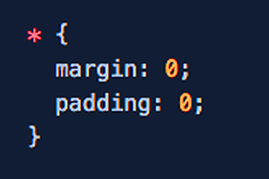

My first blog post, hello world. Thing are coming a long. I now know how to use HTML and CSS. It took me about 5 weeks to feel confidant with problem solving but now I’m sure I can figure it out. I’ve come up against a few challenges and was able to get it done. Feels good to do it to and it gets addictive after the taste of just a few small successes. I'm looking forward to problems now because I know it means I’m about to learn something. Obstacle is the way, and it is.
I missed my goal of getting the first page up by December 16. I got it up on the 20th. I can live with that. Don’t need to be perfect, just need to make progress.
Another goal I set is to code everyday. Even if I just get in a half hour. Just code. Look at code, read code, find a problem and solve it. Today was a day like that. This morning I ran out of time. Still got up at 4:30 but I felt I needed to focus on some writing this morning before I taught a class on Skype at 6:00. We have a full house for the holiday and things started to roll after that. I didn’t get to code at my usual time.
I did get a chance to pull out the computer at the table with everyone sitting around tonight and worked on a problem. It took me about 10 minutes but I figured it out. And now I’m writing this post at 11:00pm. Don’t think I will get my self to wake up tomorrow at 4:30. Maybe 6:00. We’ll see.
One rule I set for myself, go to sleep at least 6 hours before I want to wake up. Another rule I set while perusing this goal, no news, no sports and no Netflix. I added no beer today too. The reason is I want to be focused. I don’t want to introduce anything that may distract me and slow my progress, even in the smallest way. Reading the news was a distraction. It would get into my head and crowed out the important stuff I need to focus on.
Sports was a distraction too. I love sports. I didn’t watch much outside of playoff games – NFL, NBA and Baseball – but I did read the ESPN app daily. This will be the first year since I am, well, since ever, that I am not following the NFL. I will not know who is in the Super Bowl. I will not even know who the Super Bowl Champ is this year.
I did make a deal that I will watch the NBA finals, but only if Lebron James and the Cavs are back to defend the title they won last June. Lebron is a once in a lifetime player and I gotta watch. I’m focused but I’m not trying to be a monk.
It feels good to have my mind clear of all that stuff. I retain what I’m learning much better. One thing I used to do was right after working on a project I’d switch over to Facebook, ESP or The Huffington Post and get sucked in. As a result all this noise would crowd out the important stuff I just finished working on. So no more, gone. Not even sure I will go back once I reach my goal. I like my mind the way it is now.
Netflix was doing the same thing, and it kept me up late. Walking Dead took up way too much headspace too. Gone.
One tool I’m using to keep the momentum going is once a week I check in and re-evaluate my strategy. The goal doesn’t change and the plan stays pretty solid, but the strategy needs to be evaluated. And I need to write it down, which I do in my journal. With a pencil. I need to feel that pull of the lead across the page. I am a kinesthetic learner. It's good to know what kind of a learner you are. It's helped me a lot know this.
The technique I am using to re-evaluate my strategy is called an OODA loop and then FFF. OODA stands for Observe Orient Decide Act. FFF stands for Fail Forward Fast. So once I decide what to do I act quickly and if I fail it's fast and I'm still making progress.
I learned this reading a book called “Unbeatable Mind” by Mark Divine, a former Navy Seal. This is a technique they use in the Seals to teach cadets to make decisions fast. Don’t think too much about it, just decide and go. This is where the FFF part kicks in.
The real lesson I took from it is failure is not bad, it’s valuable feedback to use and improve. Great stuff once I learned to trust it and trust myself. I am more confidant knowing that if I fail it doesn’t mean I’m a failure, just means I need to re-evaluate. OODA loop and FFF, great tools to have and use.
I will keep talking about my progress in web development in future posts and I want to go into some detail about specific challenges and how I figured them out. I’ll also share some of the tools I picked up in the last year to help me be successful. Mostly books and the lessons taught by the people who wrote them.
I am also a follower of Stoic philosophy. The lessons learned from the stoics have helped me through some difficult times. With that in mind, I want to end this post with a quote from Seneca: "The fool, with all his other faults, has this also, he is always getting ready to live."